Post Mount Klamper
포스트 마운트 프레임과 포크에 바로 달고, I.S. 규격은 폴 어댑터로 장착합니다. 클램퍼의 기본형입니다.
- Weight
- 211g
- Mount
- Post mount
- Pads
- Kool Stop KS-D296S
- Pull
- Short · Long · Campagnolo
01
Brand
PaulChico, California · Since 1989
폴 컴포넌트 엔지니어링(Paul Component Engineering)은 1989년 엔지니어 폴 프라이스(Paul Price)가 캘리포니아 북부의 작은 도시 치코(Chico)에서 시작한 자전거 부품 회사입니다. 샌프란시스코에서 엔지니어로 1년 반을 일한 그는 회사를 그만두고 치코로 옮겨, 기계를 들일 큰 차고가 딸린 낡은 집부터 샀습니다.
처음 가진 공작기계는 밀링 머신과 선반 두 대, 직원은 폴 자신뿐이었습니다. 첫 제품인 시트포스트 퀵릴리즈의 시제품을 본 오스트리아의 한 사업가가 주문을 넣으면서 회사가 시작되었습니다. 지금은 치코 외곽의 옛 텍사코(Texaco) 창고 자리에서, CNC 머신과 손으로 돌리는 오래된 공작기계로 모든 부품을 직접 깎습니다.
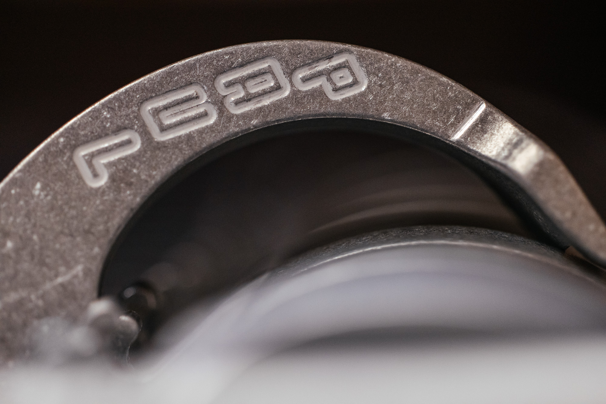
The Hard Way
폴의 공장에서는 알루미늄 원재료가 들어오면 대략의 크기로 자르고, CNC 머신으로 깎고, 텀블링으로 다듬은 뒤 상자에 담습니다. 라다비스트(The Radavist)가 2015년 이 공장을 찾았을 때, 약 185㎡의 작업장에서는 하루 200개 남짓한 부품이 만들어지고 있었고, 한쪽의 시제품용 머신은 아직 공개되지 않은 부품을 깎고 있었습니다.
새 부품은 치코의 비드웰 파크(Bidwell Park)에서 직접 타며 시험합니다. 미국에서도 거칠기로 손꼽히는 산악자전거 코스가 공장에서 자전거로 갈 수 있는 거리에 있고, 직원 상당수가 자전거로 출근합니다. 일이 끝나면 함께 트레일을 타고 강물에 뛰어드는 것까지가 치코의 하루입니다.
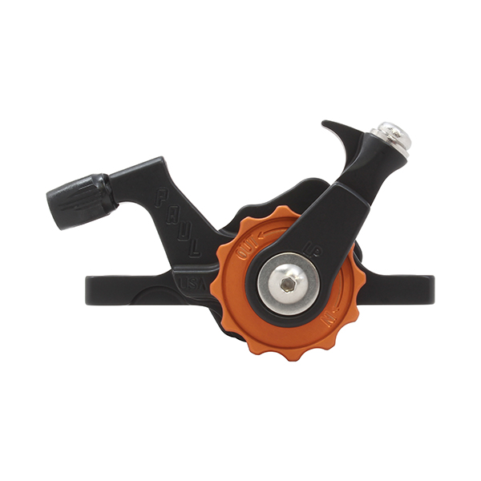
모든 부품은 백지에서 시작합니다. 클램퍼는 개발에 3년이 걸렸고, 캘리퍼 몸체만 수없이 도면을 고치며 20개 가까운 시제품을 만들었습니다.
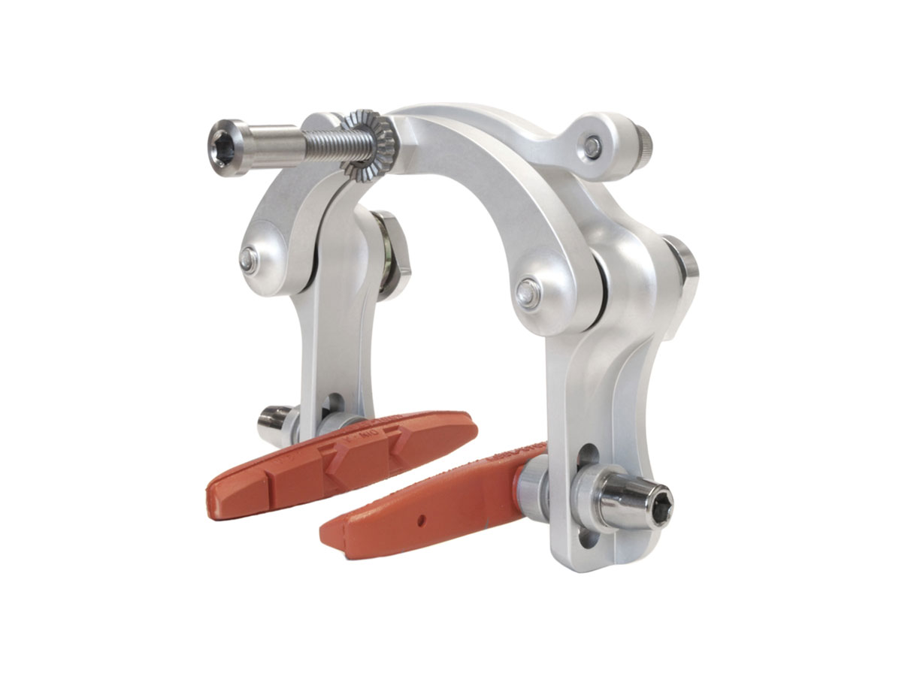
6061과 2024 알루미늄을 공장 안에서 직접 깎고 마감합니다. 쓰는 알루미늄은 모두 미국에서 단조한 것이고, 모든 부품을 미국에서 만듭니다.
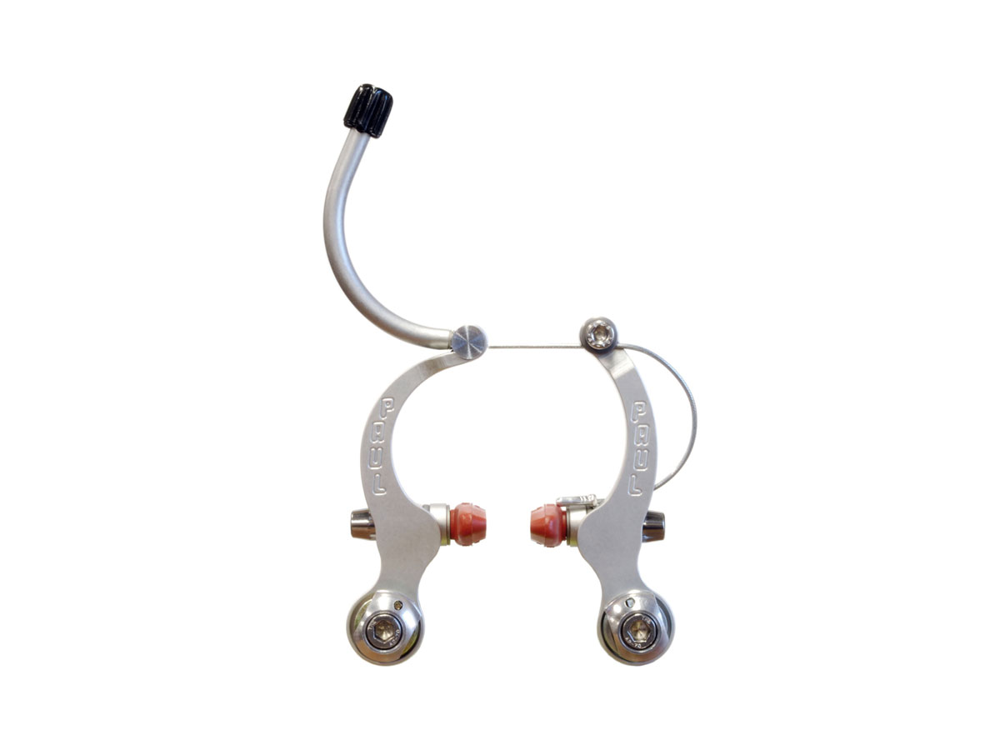
시험장은 공장 근처의 트레일입니다. 폴과 직원들이 직접 타며 고친 부품만 생산 라인으로 넘어갑니다.
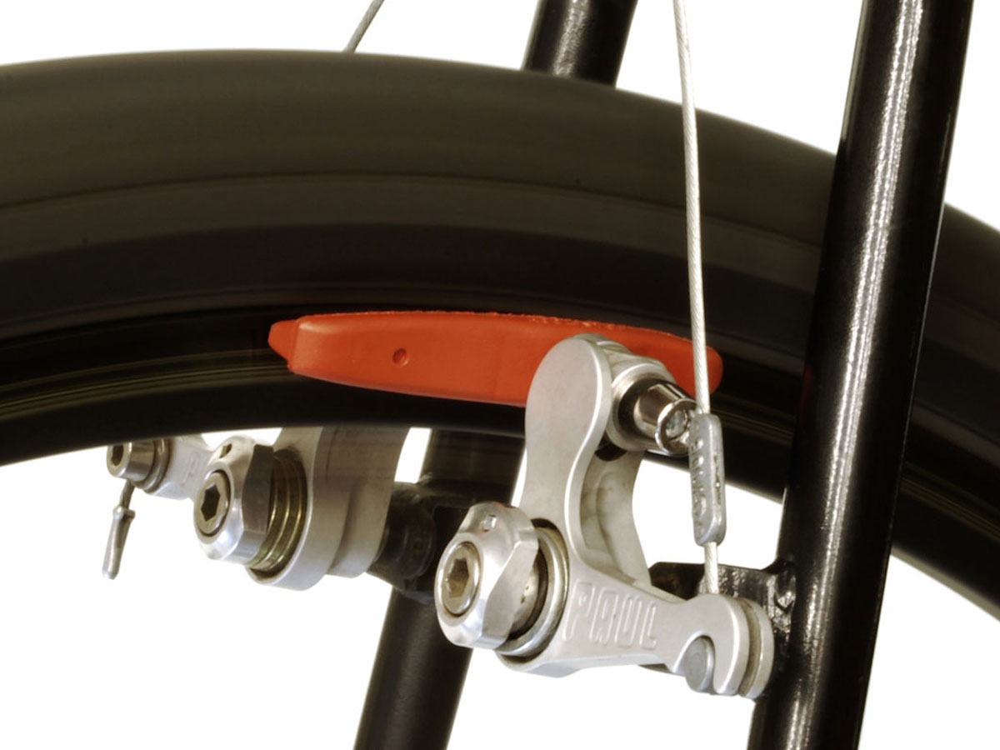
실드 카트리지 베어링과 교체 가능한 피벗, 공개된 분해도. 소부품까지 따로 구할 수 있어 평생 정비하며 쓰는 부품입니다.
Anodized in Chico기본 마감은 블랙, 퍼플, 실버 아노다이징과 폴리시. 그 밖의 컬러는 제품과 시기에 따라 한정 생산

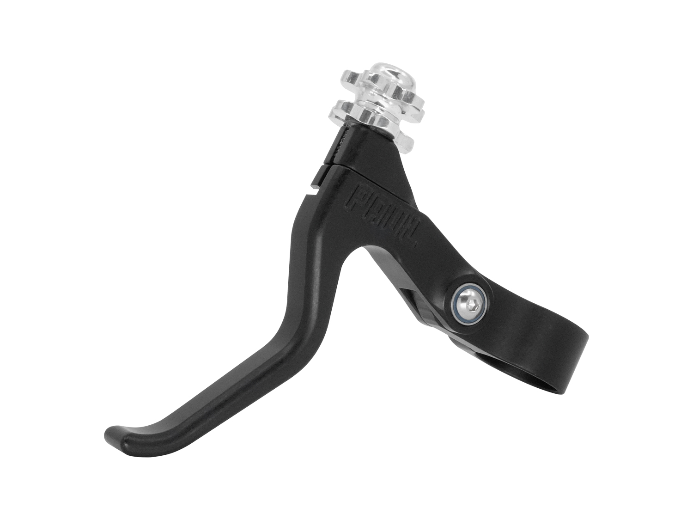
Founder · Paul Price
“완벽을 좇는 일이 늘 가장 중요했습니다. 그러니 평범하고 예측 가능한 삶은 처음부터 맞지 않았습니다.”
폴은 중학생 때 부모님 차고에서 오크 나무로 스케이트보드를 깎던 아이였습니다. 예술가와 엔지니어 사이에서 자라 무엇이든 분해해 보던 그는 1988년 치코에 와서, 치코의 전설적인 프레임 빌더 제프 린지(Jeff Lindsay)의 마운틴 고트(Mountain Goat)에서 일했습니다. 맡은 일은 필렛 브레이징 이음새를 다듬는 일이었지만, 린지의 기억으로는 그때도 폴이 정말 만들고 싶어 한 것은 퀵릴리즈였습니다.
회사가 커진 지금도 폴은 생산 라인 옆의 작은 개인 공방에서 늦게까지 시제품을 깎습니다. 공방에는 2차 세계대전 무렵의 셰이퍼와 커니 앤 트레커(Kearney & Trecker) 밀링 머신 같은 오래된 수동 공작기계가 있고, 천장에는 새 허브나 브레이크, 휠 규격이 나올 때마다 그가 직접 만든 자전거들이 걸려 있습니다.
폴은 매년 기자와 프레임 빌더들을 치코로 불러 공장을 보여주고 함께 트레일을 타는 폴 캠프(Paul Camp)를 열어 왔습니다. 화려한 전시장보다 부품이 만들어지는 자리와 그 부품을 시험하는 길을 직접 보여주는 쪽을 택한 것입니다.
Paul Component Engineering, StoryPaul Component Engineering
The Range
브레이크부터 허브까지, 같은 공장에서 같은 방식으로 깎아 만든 부품들.
볼 앤 램프 방식의 케이블 디스크 브레이크. 포스트 마운트와 플랫 마운트.
마팍 탠덤의 형상을 이어받은 와이드 캔틸레버. 진흙 틈새가 넉넉합니다.
암을 위로 세워 폭을 줄인 캔틸레버. 패니어와 발뒤꿈치에 걸리지 않습니다.
마팍 센터풀을 다시 깎은 브레이크. 넓은 타이어와 풀 펜더에 맞습니다.
짧은 암으로 더 가볍고 단단하게 만든 레이서.
로드 레버와 맞춘 짧은 암의 다이렉트 풀 브레이크. 케이블 행어가 필요 없습니다.
오버사이즈 실드 피벗과 사각 스프링의 리니어 풀 브레이크.
캔티 레버, 러브 레버, 듀플렉스, 크로스, 리버스, 이레버. 풀에 맞춰 고르는 여섯 가지 레버.
2024 항공 알루미늄을 깎은 박스 단면 스템. 토크스 스테인리스 볼트.
구면 와셔로 각도를 잡는 투볼트 시트포스트. 셋백 26mm와 0mm.
1996년 첫 싱글스피드 MTB 허브에서 이어진 워드와 짝을 이루는 프론트 허브.
2024 알루미늄을 깎은 스퀘어 테이퍼 크랭크. 3볼트 다이렉트 마운트 체인링.
02
Disc Brake
KlamperPost mount · Flat mount
클램퍼는 폴이 백지에서 다시 설계한 기계식 디스크 브레이크입니다. 목표는 오일 없이 케이블만으로 믿을 수 있고, 조정이 쉽고, 길 위에서 손볼 수 있는 브레이크였습니다. 3년의 개발 끝에 2015년 첫 300개가 치코에서 만들어졌고, 지금은 그래블과 투어링 자전거에서 폴을 대표하는 부품입니다.
원리는 오래 검증된 볼 앤 램프 방식입니다. 폴은 여기에 더 큰 볼과 열처리한 강철 접촉면을 넣어 작동을 부드럽게 하고 패드 이동 거리를 늘렸습니다. 레버를 당기면 가볍게 시작해 끝에서 단단히 무는 감각, 그리고 손끝으로 조절하기 쉬운 제동력이 클램퍼의 성격입니다.
볼을 키워 작동을 부드럽게 하고 패드 이동 거리를 늘렸습니다. 볼이 닿는 면은 열처리한 강철입니다.
패드 액추에이터는 경화 강철 핀 세 개로 자리를 잡고, 흔히 쓰는 플라스틱 와셔 대신 평면 니들 롤러 스러스트 베어링이 힘을 받습니다.
안쪽 백킹 플레이트에 송곳니 모양의 보강을 더하고, 바깥 몸체는 필요한 곳만 두껍게 만들어 캘리퍼 강성을 높였습니다.
패드 조절 다이얼은 스프링 볼 플런저로 한 칸씩 딸깍 걸립니다. 공구 없이 손으로 패드 간격을 맞추고, 그 자리를 유지합니다.
포스트 마운트 프레임과 포크에 바로 달고, I.S. 규격은 폴 어댑터로 장착합니다. 클램퍼의 기본형입니다.
요즘 그래블과 로드 프레임이 쓰는 플랫 마운트 버전. 장착 볼트 길이는 프레임과 어댑터에 따라 달라 따로 고릅니다.
숏 풀은 시마노 · 스램 로드 레버와 캔티 레버, 롱 풀은 러브 레버와 케인크릭 드롭 V, 캄파놀로는 전용 초단 암. 암만 바꿔 다른 레버로 옮길 수 있습니다.
Klamper · With Paul levers블랙, 실버, 퍼플, 폴리시 외
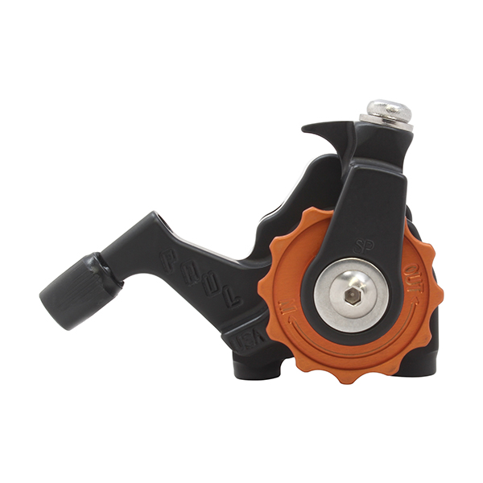
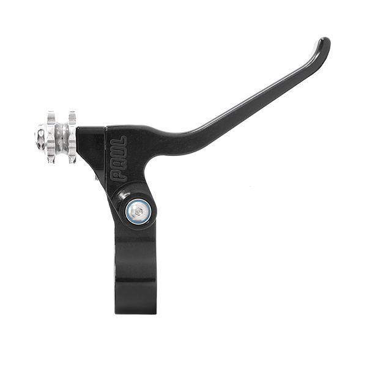
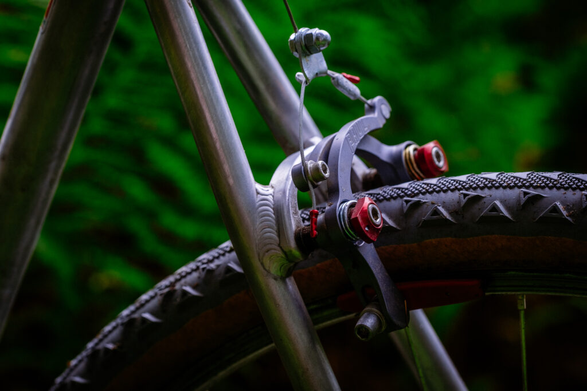
Bed-in
새 패드는 짧은 라이딩 몇 번으로 길들이는 시간이 필요합니다. 폴은 세 번째 라이딩쯤부터 클램퍼가 진짜로 물기 시작한다고 말합니다. 패드는 쿨스톱 소결 메탈(KS-D296S)이 기본이고, 스램 · 아비드 MTB 규격 패드를 함께 씁니다.
로터는 폴이 만들지 않습니다. 시마노 아이스테크, 스램, 아비드 등 대부분의 로터와 잘 맞고, 버튼이 큰 플로팅 로터는 캘리퍼에 닿을 수 있습니다. 루비워크샵에서 로터와 어댑터, 레버 조합을 함께 맞춰 드립니다.
03
Rim Brakes
Cantilever · Centerpull · VNeo-Retro, Racer, MiniMoto
1992년 치코의 첫 기계 공장에서 만든 스톱라이트 브레이크(Stoplight Brakes) 이후, 브레이크는 줄곧 폴이 가장 많이 만드는 부품입니다. 디스크 브레이크의 시대에도 폴은 캔틸레버와 센터풀을 놓지 않았습니다. 강철 프레임의 투어링 바이크와 클래식 로드, 650B 랑도너에는 여전히 이 브레이크가 가장 잘 어울리기 때문입니다.
네오레트로와 레이서는 프랑스 마팍(Mafac)의 고전적인 형상을 현대의 소재와 조정 기능으로 다시 만든 브레이크입니다. T자 단면의 암은 힘을 받아도 휘지 않고, 실드 피벗과 조절식 스프링은 오래도록 부드럽게 중심을 잡습니다. 패드는 모두 쿨스톱 씬라인(Thinline) 살몬이 기본입니다.
마팍 탠덤의 형상을 이어받은 넓은 캔틸레버. 긴 암이 큰 지렛대와 넉넉한 진흙 틈새를 만들어 사이클로크로스와 투어링에 맞습니다.
네오레트로와 같은 구조에 암을 위로 세워 폭을 크게 줄였습니다. 큰 패니어를 달거나 발뒤꿈치와 종아리 공간이 좁은 자전거에 맞습니다.
마팍 센터풀을 CNC로 다시 깎은 브레이크. 넓게 벌어진 피벗 덕분에 굵은 타이어와 풀 펜더가 함께 들어갑니다.
짧고 단단한 암으로 더 가볍고 날카롭게 만든 레이서. 32mm 타이어와 45mm 펜더가 암 사이에 들어갑니다.
암을 짧게 줄여 일반 로드 레버의 지렛대비에 맞춘 다이렉트 풀 브레이크. 케이블 행어 없이 간단히 달고, 퀵릴리즈가 있습니다.
오버사이즈 실드 피벗과 따로 조절하는 사각 스프링. 긴 암으로 패드를 높게 올릴 수 있어 26인치 프레임에 650B나 700C 휠을 넣을 때도 씁니다.
Cantilever · Centerpull휠 하나 기준 판매
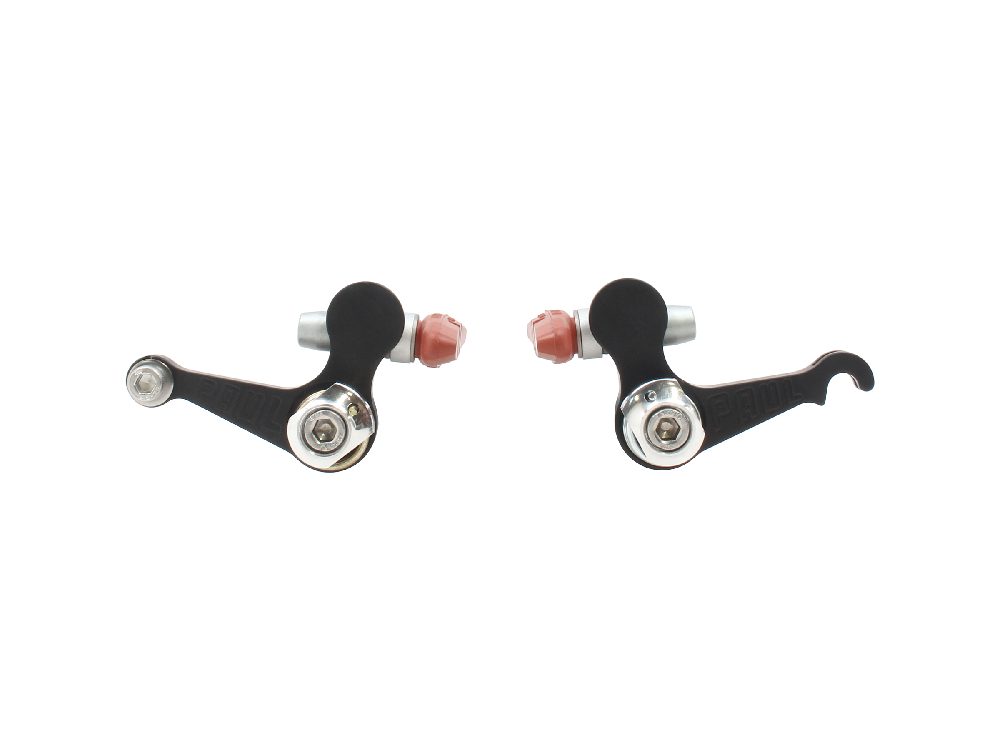
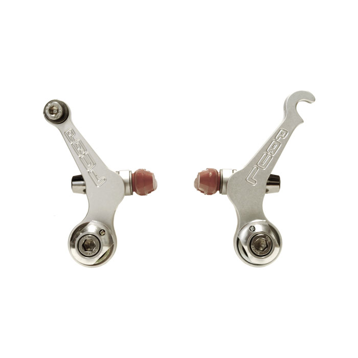
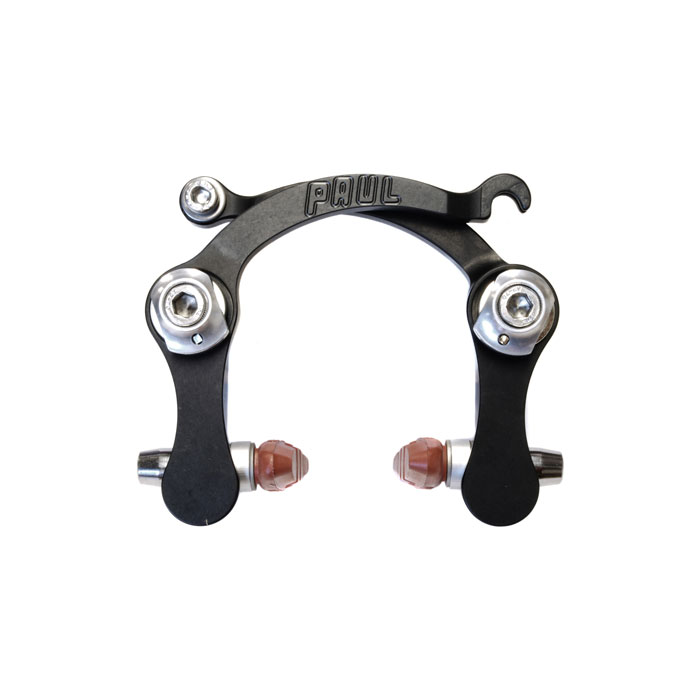
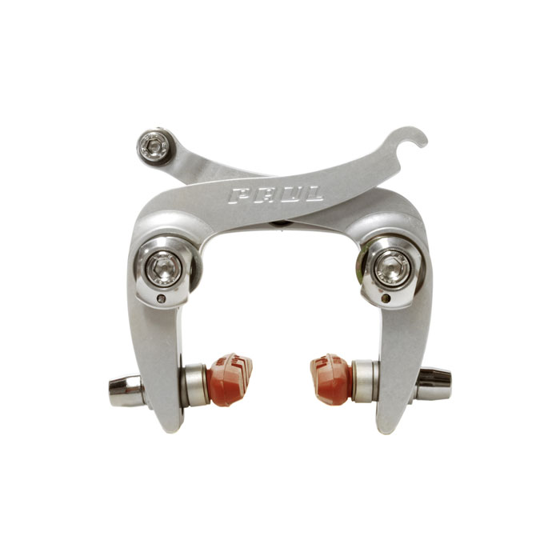
V Brake · Colours아노다이징 블랙 · 퍼플 · 실버, 폴리시 외
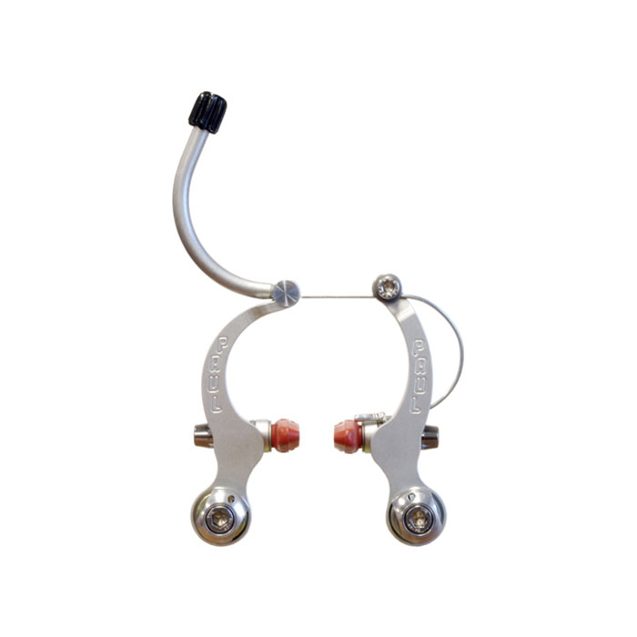
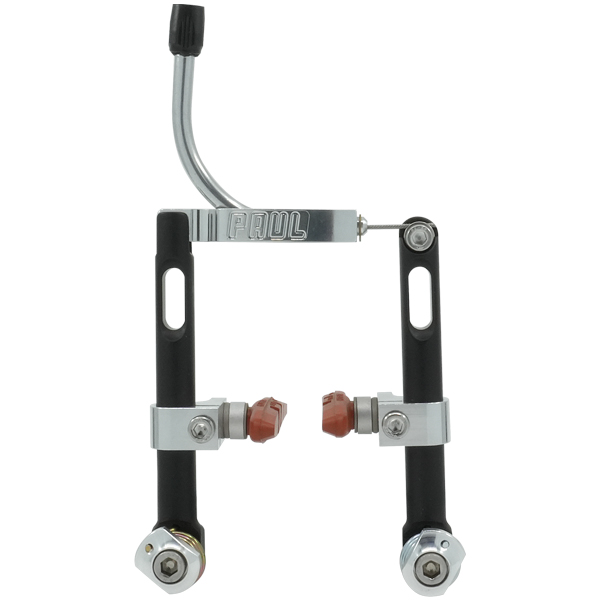
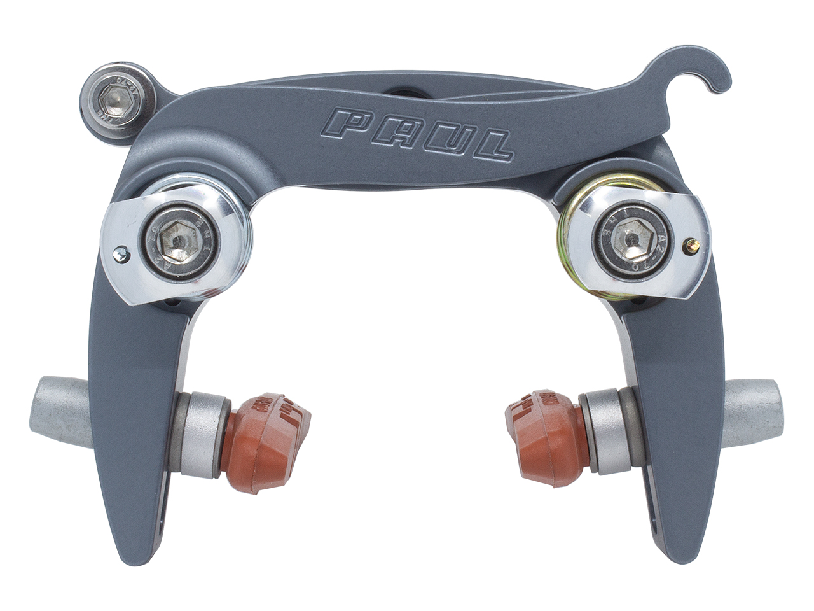
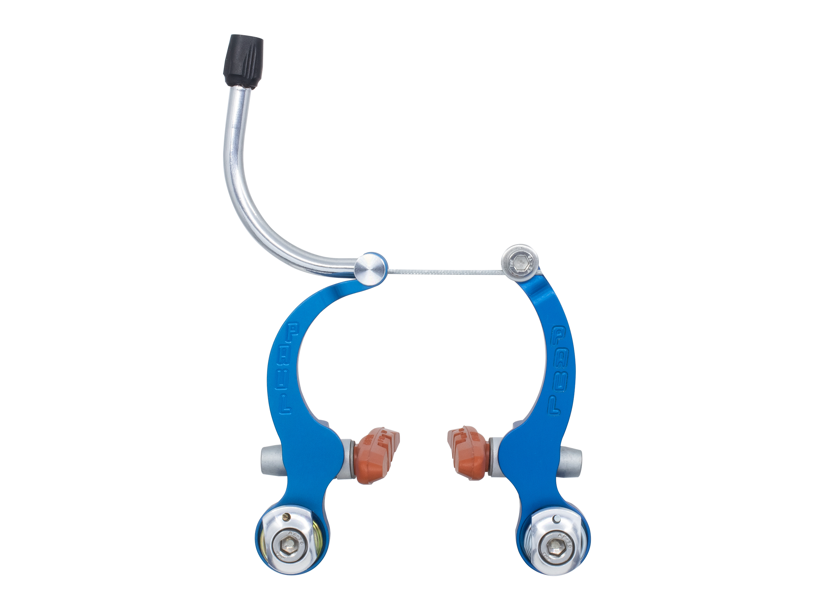
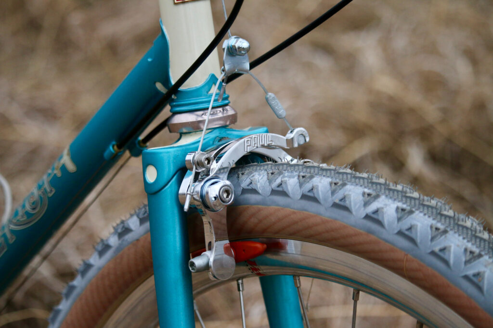
Racer · Braze-on
레이서의 브레이즈온 버전은 프레임 빌더가 정해진 위치에 납땜한 센터풀 보스에 바로 답니다. 보스 위치에 따라 700C, 650B, 26인치 휠에 맞는 리치가 정해지고, 브리지가 없어 더 단단하고 깔끔합니다.
기성 프레임에는 프레임 위 브레이크 구멍 하나로 다는 센터 마운트 버전을 씁니다. 리치가 긴 클래식 프레임과 펜더를 단 랑도너에 잘 맞습니다. 루비워크샵의 커스텀 빌드에서는 프레임 단계부터 보스 위치와 브레이크를 함께 정해 드립니다.
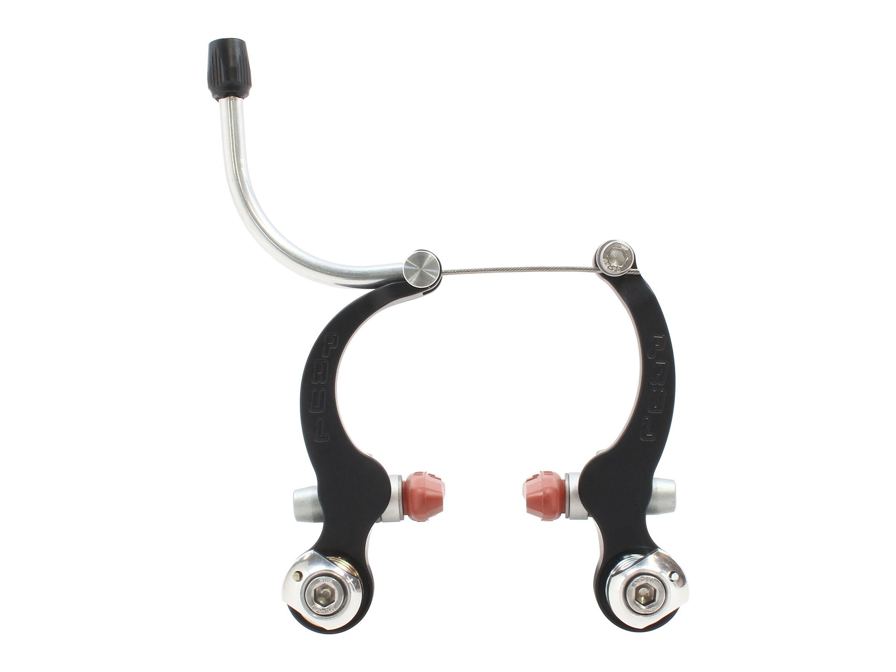
MiniMoto
일반 V 브레이크는 케이블을 많이 당기는 플랫바 레버에 맞춰져 있어 로드 레버와는 맞지 않습니다. 미니모토는 암을 짧게 줄여 로드 레버의 지렛대비에 맞췄습니다. 캔틸레버처럼 행어와 스트래들 와이어를 따로 달 필요가 없고, 폭도 좁습니다.
스프링은 좌우를 따로 조절하고, 피벗에는 실드 스테인리스 부싱을 썼습니다. 휠을 뺄 때 쓰는 퀵릴리즈가 있고, 펜더 없이 44~45mm 타이어가 들어갑니다. 캄파놀로 레버와는 맞지 않습니다.
04
Brake Levers
Canti · Love · Duplex · CrossShort pull, long pull, both
레버와 브레이크는 케이블을 당기는 양, 즉 풀(pull)이 맞아야 제대로 섭니다. 캔틸레버와 센터풀, 미니모토, 숏 풀 클램퍼에는 숏 풀 레버를, V 브레이크와 모토라이트, 롱 풀 클램퍼에는 롱 풀 레버를 씁니다.
폴의 레버는 모두 6061 알루미늄을 치코에서 깎아 만듭니다. 피벗에는 실드 카트리지 베어링이나 스테인리스 피벗을 써서 유격 없이 단단하고, 큰 배럴 어저스터로 케이블 장력을 손으로 맞춥니다.
캔틸레버, 센터풀, 사이드풀, 미니 V, 숏 풀 디스크를 위한 플랫바 레버. 듀얼 실드 베어링 피벗, 스탠다드와 쇼트 리치.
V 브레이크와 롱 풀 디스크를 위한 레버. 두 손가락 컴팩트와 세 손가락 2.5, 5mm 리치 조절 나사.
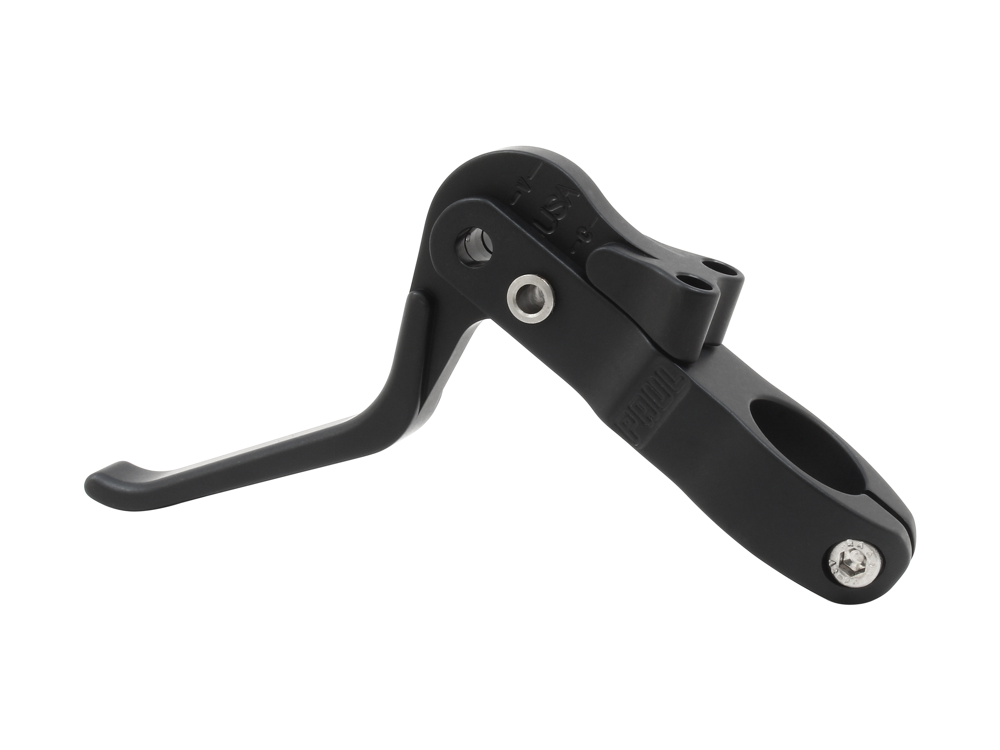
레버 하나로 케이블 두 개를 당깁니다. 말레를 휘두르며 브레이크를 잡아야 하는 바이크 폴로에서 시작했고, 좌우 어느 손에도 맞습니다.
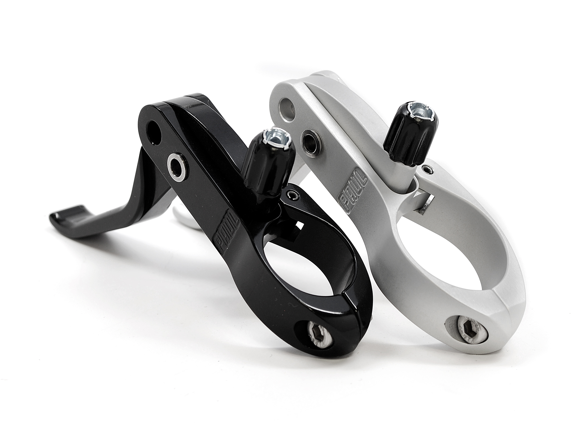
드롭바 상단에 다는 보조 레버. 피벗 구멍을 바꿔 숏 풀과 롱 풀 브레이크에 모두 맞춥니다.
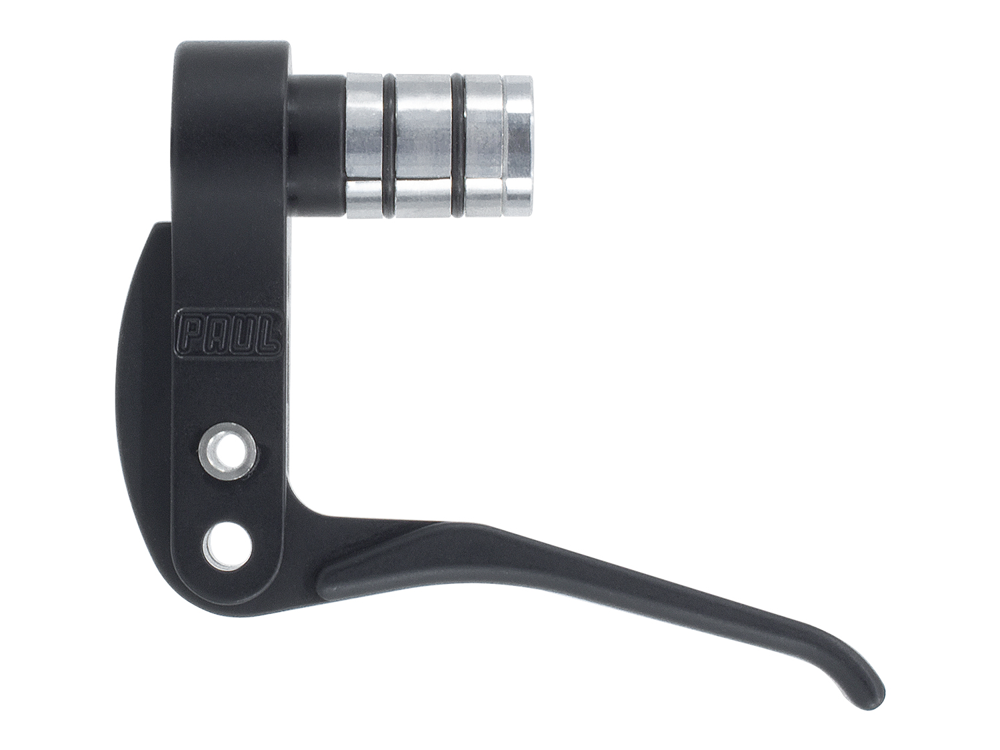
핸들바 끝에 거꾸로 꽂는 레버. 좌우 공용이고, 피벗을 옮겨 숏 풀과 롱 풀을 고릅니다.
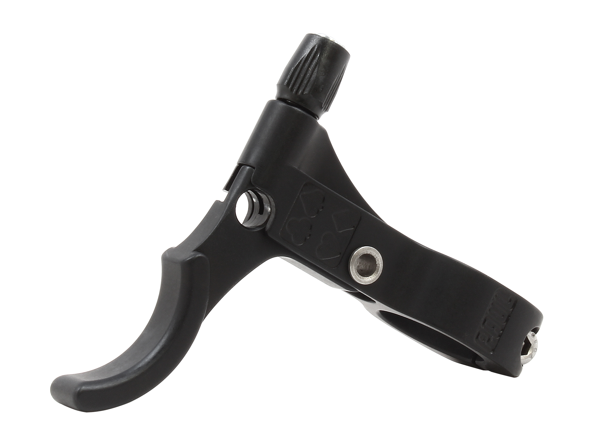
한 손가락으로 쓰는 작은 숏 풀 레버. 지렛대비가 작아 고정 기어나 코스터 브레이크와 함께 쓰는 보조 브레이크로 권합니다.
05
Stem · Seatpost
Boxcar · Tall and HandsomeMachined from 2024 aluminum
박스카 스템은 2024 항공 알루미늄을 깎아 만듭니다. 이름처럼 둥근 상자 모양의 단면이 비틀림에 강하고, 볼트는 스테인리스 T25 토크스입니다. 육각 렌치보다 과하게 조이기 어려운 토크스를 고른 것도 카본 핸들바와 스티어러를 지키기 위해서입니다.
톨 앤 핸섬과 톨 앤 엘레강트 시트포스트는 볼트 두 개와 구면 스테인리스 와셔로 안장을 잡습니다. 나사 하나로 각도를 미세하게 바꾸고, 두 볼트를 함께 풀어 앞뒤를 옮깁니다. 약 15° 범위로 기울일 수 있고, 오벌 카본 레일도 잡습니다.
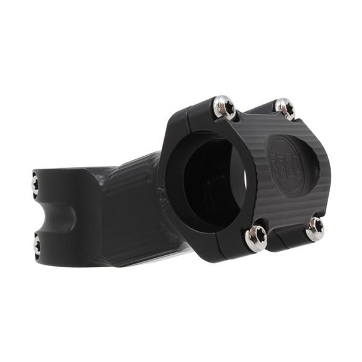
35mm부터 110mm까지, 0° · 7° · 12° · 15°. 31.8과 35.0 핸들바 클램프.
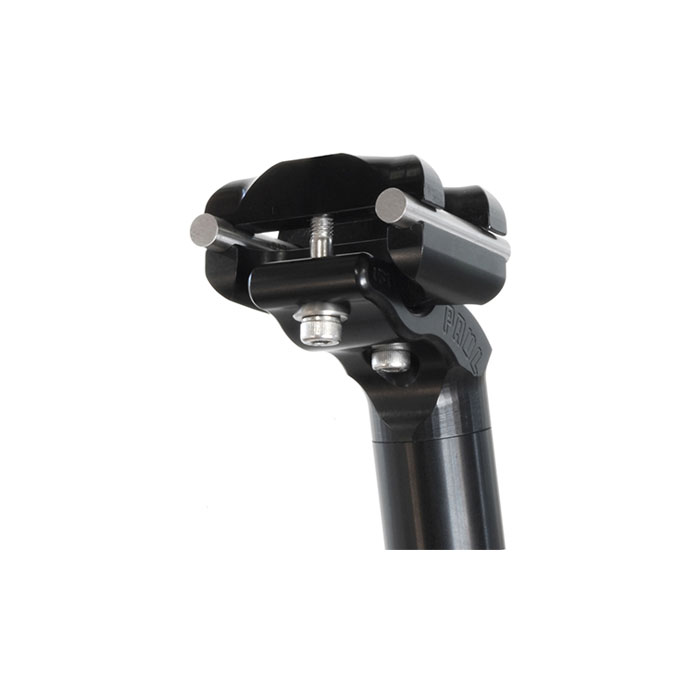
셋백 26mm. 브룩스처럼 레일이 짧아 안장을 뒤로 빼야 하는 라이더에게 맞습니다.
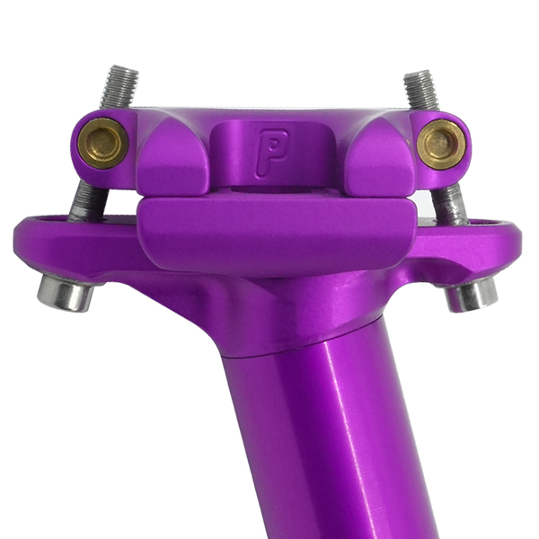
셋백 0mm의 인라인 포스트. 같은 투볼트 헤드에 황동 트러니언으로 각도를 잡습니다.
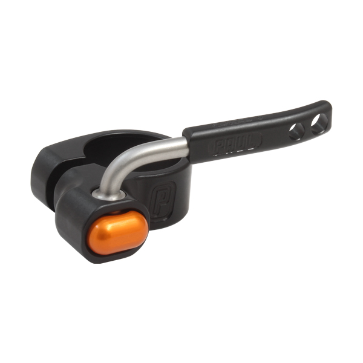
폴의 첫 제품이던 시트포스트 퀵릴리즈를 잇는 칼라. 6061 · 7075 알루미늄과 스테인리스.
06
Hubs · Drivetrain
Word · FHub · CranksSingle speed since 1996
워드(Word)는 1996년 폴이 만든 첫 싱글스피드 MTB 허브에서 이어진 리어 허브입니다. 변속기 없이 산을 타는 사람들을 위한 전용 허브가 거의 없던 시절, 폴은 넓은 플랜지 간격으로 접시 모양(디시) 없이 휠을 짤 수 있는 허브를 만들었습니다.
허브 몸체는 6061, 액슬은 7075 알루미늄입니다. 실드 카트리지 베어링은 조절 링으로 직접 유격을 맞추고, 디스크 워드는 퀵릴리즈와 볼트온, 12mm 스루 액슬 중 하나로 액슬을 바꿔 끼웁니다. 오래 타고, 고치고, 다시 짜서 쓰는 허브입니다.
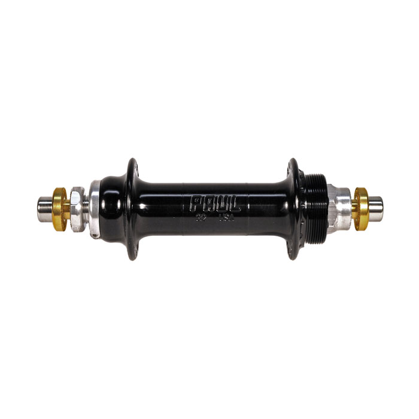
프리휠 나사산(1.37 x 24tpi)의 135mm 싱글스피드 허브. 신치 볼트 조절 링.
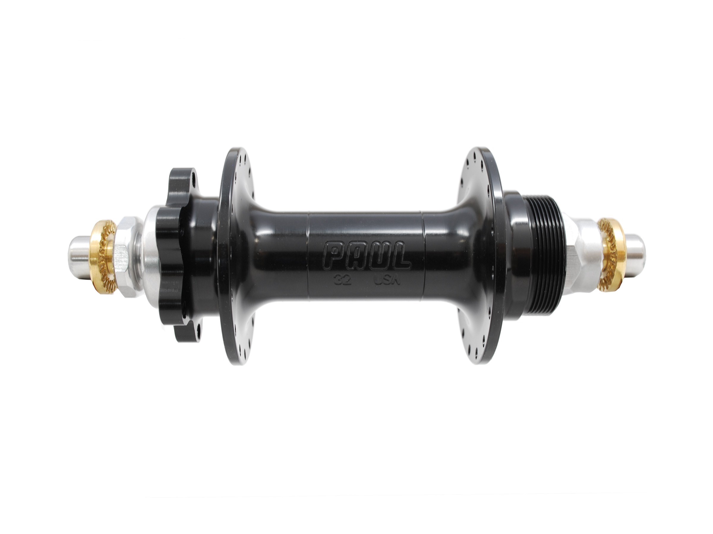
6볼트 디스크 마운트. 퀵릴리즈와 볼트온 135mm, 12mm 스루 액슬 142mm.
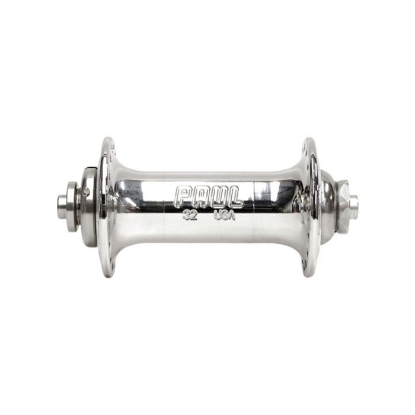
정밀하게 깎은 베어링 자리와 실드 베어링의 가벼운 프론트 허브. 퀵릴리즈와 볼트온.
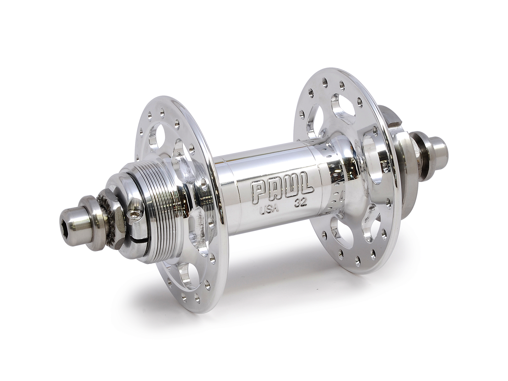
65mm 플랜지에 창을 낸 트랙 허브. 리어는 플립플롭, 고정 · 프리, 한쪽 고정.
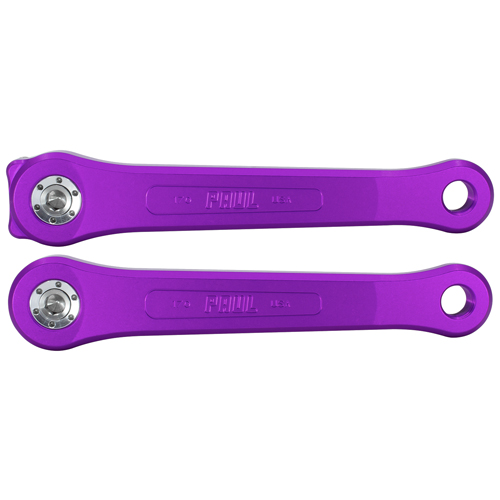
미국에서 깎은 2024 알루미늄 크랭크. JIS 스퀘어 테이퍼 비비로 Q 팩터와 체인스테이 간격을 고르고, 3볼트 스램 다이렉트 마운트 체인링을 씁니다. 고정 기어용은 아닙니다.
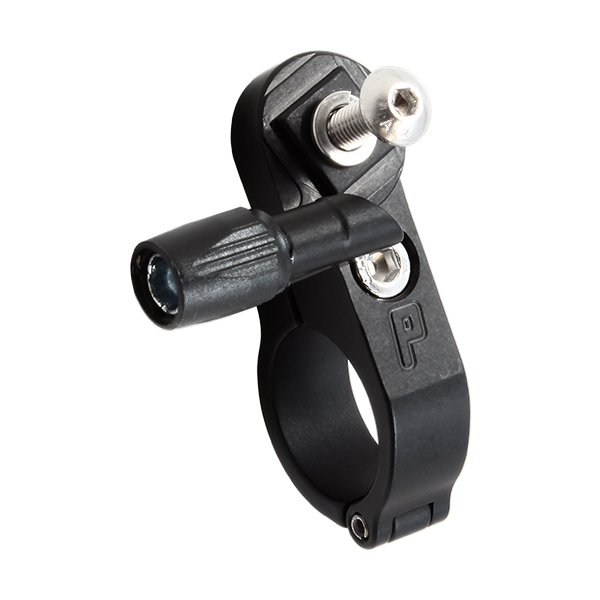
바엔드 시프터나 다운튜브 시프터를 엄지 시프터로 바꾸는 마운트. 드롭바 자전거를 플랫바로 바꿀 때 씁니다. 시마노 · 스램 · 마이크로시프트용.
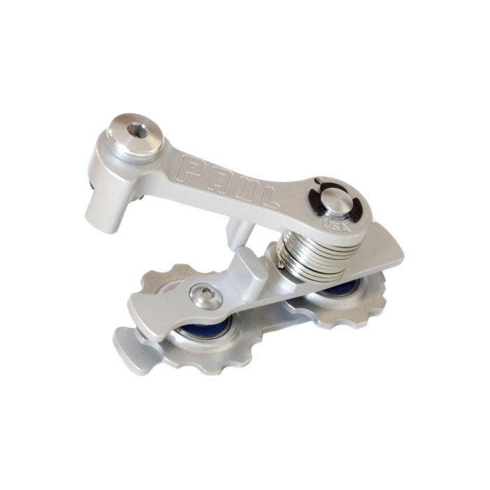
뒷변속기 자리에 달아 수직 드롭아웃 프레임에서 싱글스피드를 쓰게 하는 텐셔너. 풀리 두 개로 앞 체인링 차이 20T까지 받습니다.
Hubs · Detail블랙, 실버, 폴리시 외
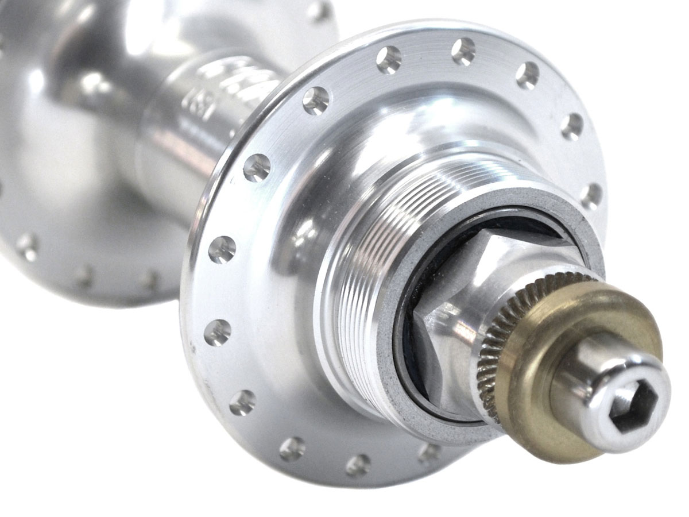
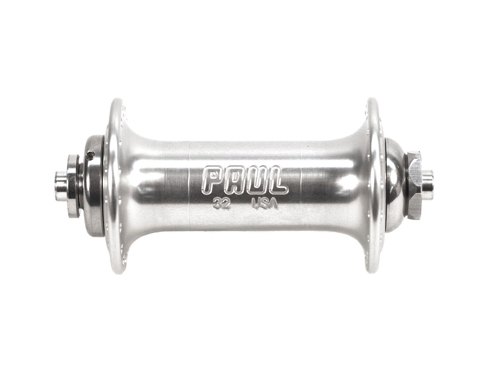
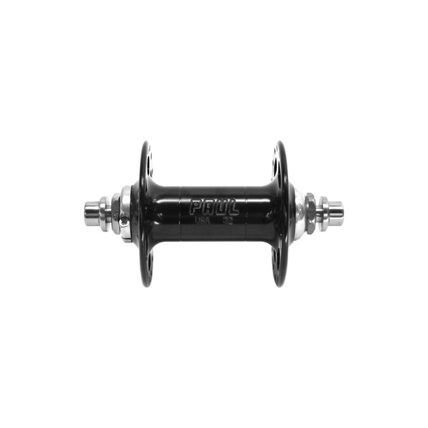
07
Fit Guide
폴 브레이크를 고를 때는 프레임의 브레이크 마운트(포스트 · 플랫 마운트, 캔티 보스, 센터풀 보스)와 함께 쓰는 레버의 케이블 풀을 먼저 확인하세요. 수치는 폴 컴포넌트 공식 기술 정보 기준입니다.
Brakes무게는 휠 하나 기준
Levers클램프는 핸들바 지름
폴 브레이크는 휠 하나 기준으로 판매하며, 디스크 로터와 어댑터, 레버는 별매입니다. 센터풀 브레이즈온 버전은 프레임에 맞는 위치의 보스가 있어야 하고, 리치는 휠 크기와 보스 위치에 따라 달라집니다. 루비워크샵에서 프레임과 레버를 확인하고 브레이크와 레버, 로터 조합을 함께 맞춰 드립니다.
08
Story
1989 ~ 2026Chico, California
시트포스트 퀵릴리즈 하나로 시작해, 프레임 빌더들과 함께 만든 기금 마련 자전거로 2026년 메이드 바이크 쇼에 서기까지. 많은 부품 회사가 생산을 해외로 옮기는 동안, 폴은 37년 동안 치코에서 직접 설계하고 직접 깎고 직접 타 보는 방식을 지켜 왔습니다.
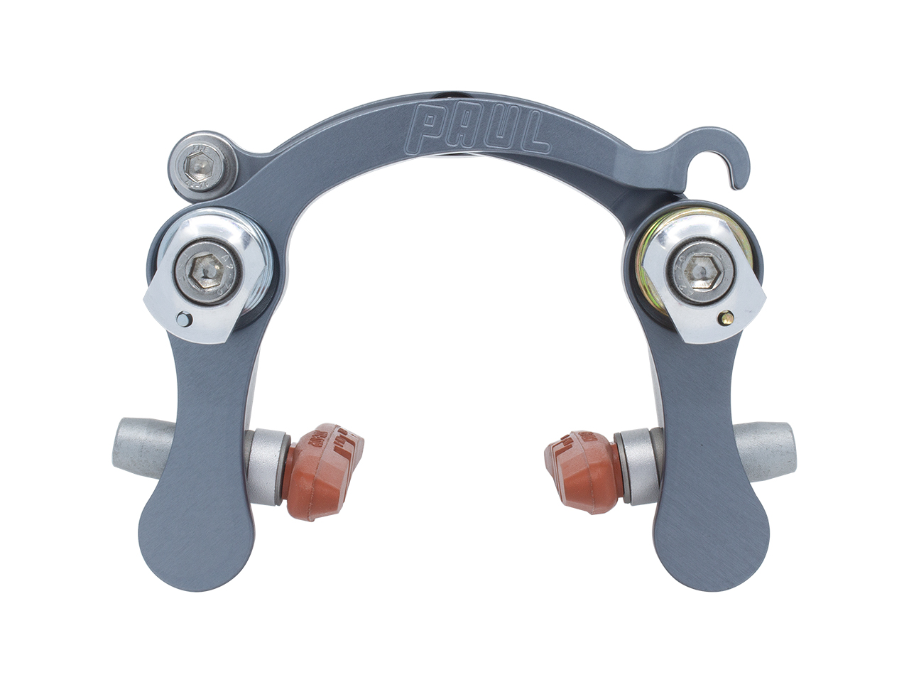
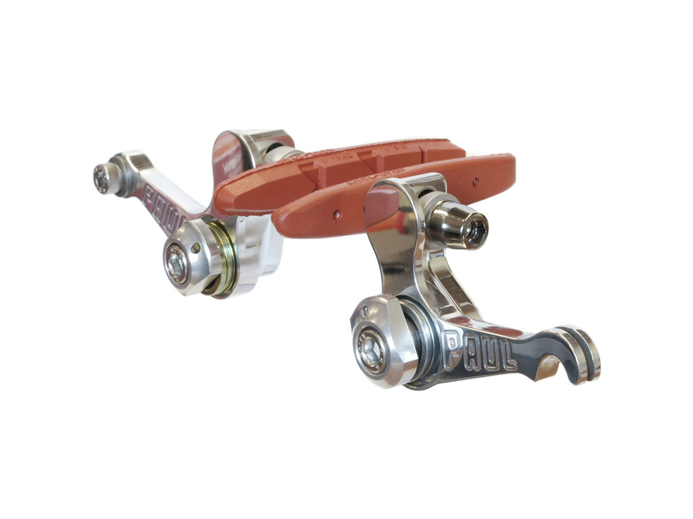
샌프란시스코의 엔지니어 일을 그만두고 치코로 옵니다. 제프 린지의 마운틴 고트에서 필렛 이음새를 다듬으며 일합니다.
차고에서 첫 제품 시트포스트 퀵릴리즈를 만듭니다. 오스트리아의 한 사업가가 넣은 첫 주문이 회사의 시작이 됩니다. 이어서 휠 퀵릴리즈가 나옵니다.
치코에 첫 기계 공장을 엽니다. 같은 해 스톱라이트 브레이크를 내놓으며 브레이크는 폴의 대표 부품이 됩니다.
싱글스피드 산악자전거를 위한 폴의 첫 허브를 만듭니다. 지금의 워드와 디스크 워드가 여기서 이어집니다.
3년의 개발 끝에 클램퍼 첫 300개를 생산합니다. 라다비스트가 치코 공장을 찾아 하루를 함께 보냅니다.
열한 명의 프레임 빌더가 몬스터크로스와 MTB를 주제로 만든 열한 대의 자전거와 함께 폴 캠프를 엽니다.
30주년. 그린 아노다이징 한정판과 30주년 박스 세트를 내고, 시트포스트에 30.9 · 31.6mm를 더합니다.
블랙캣 바이시클의 프레임에 폴 부품을 더한 기금 마련 자전거를 포틀랜드 메이드 바이크 쇼에 선보입니다. 수익은 모두 오크리지 트레일 얼라이언스에 기부합니다.
09 · Showroom
깎아 낸 면과 아노다이징의 색은 직접 봐야 압니다. 루비워크샵에서 폴 부품을 직접 보고, 프레임과 라이딩 스타일에 맞는 브레이크와 레버 조합을 함께 정해 드립니다. 커스텀 빌드 상담도 가능합니다.
For Dealers
폴 컴포넌트 엔지니어링의 한국 공식 디스트리뷰터는 루비컴퍼니입니다. 매장 입점과 거래 조건은 루비컴퍼니의 B2B 채널 루비서플라이로 문의해 주세요.